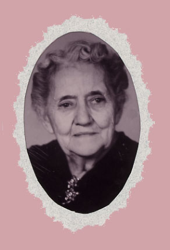

| Florence Olive Zingg was born January 5th, 1874 in Walkerton, Ontario, Canada. She married Gustavus Andreas Wogsland, who went by Andrew, on 16 March 1899 in Dazey, ND. Together they had nine children, and also adopted a son, Richard Andrew Wogsland. Florence died November 25th, 1966. |
 Florence Zingg Wogsland |